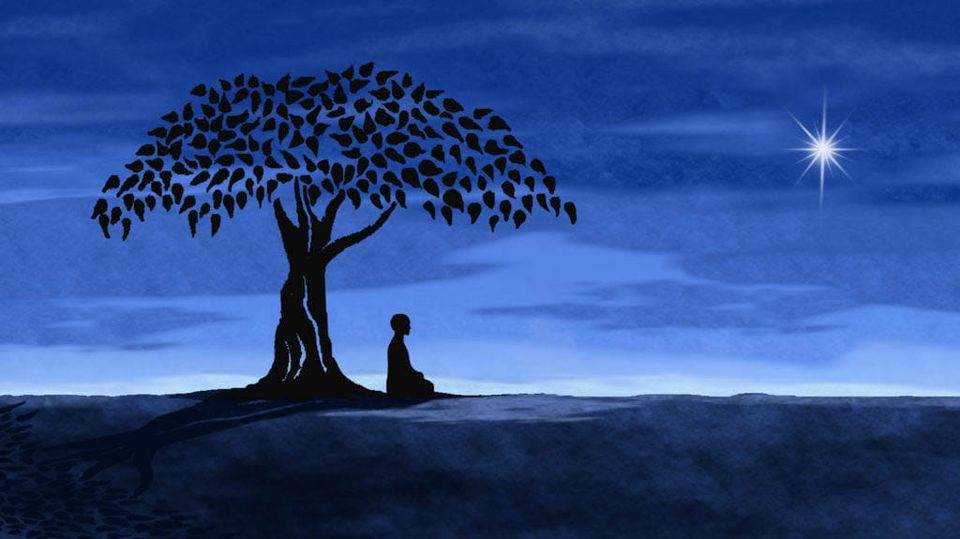

Decides cruzar el puente. Con cada paso, las tablas crujen bajo tus pies, pero logras mantener el equilibrio. Al llegar al otro lado, el hombre mayor te sonríe y te lleva a un claro en el bosque. Allí, te muestra un árbol antiguo con raíces que brillan como el oro.
"Este es el Árbol de los Deseos", dice el hombre. "Si eres digno, te concederá un deseo". Piensas cuidadosamente y decides pedir sabiduría. El árbol brilla intensamente, y de repente sientes una oleada de conocimiento y paz interior. El hombre te explica que ahora eres el guardián del bosque, y tu vida cambia para siempre.
Vives el resto de tus días protegiendo el bosque y ayudando a quienes se pierden en él, guiándolos hacia su destino.
